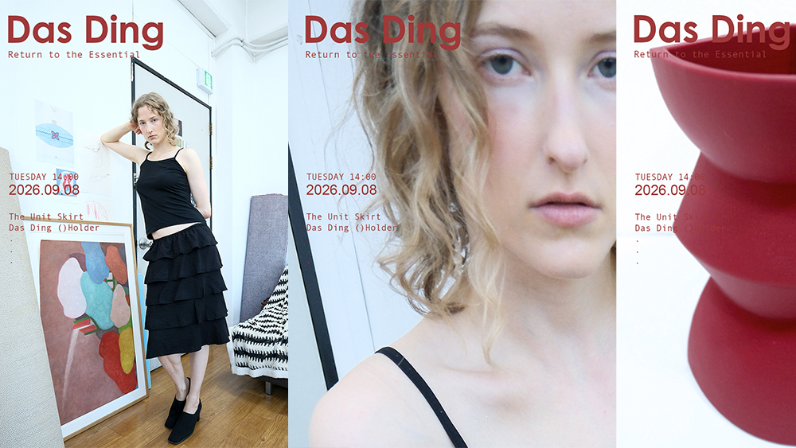
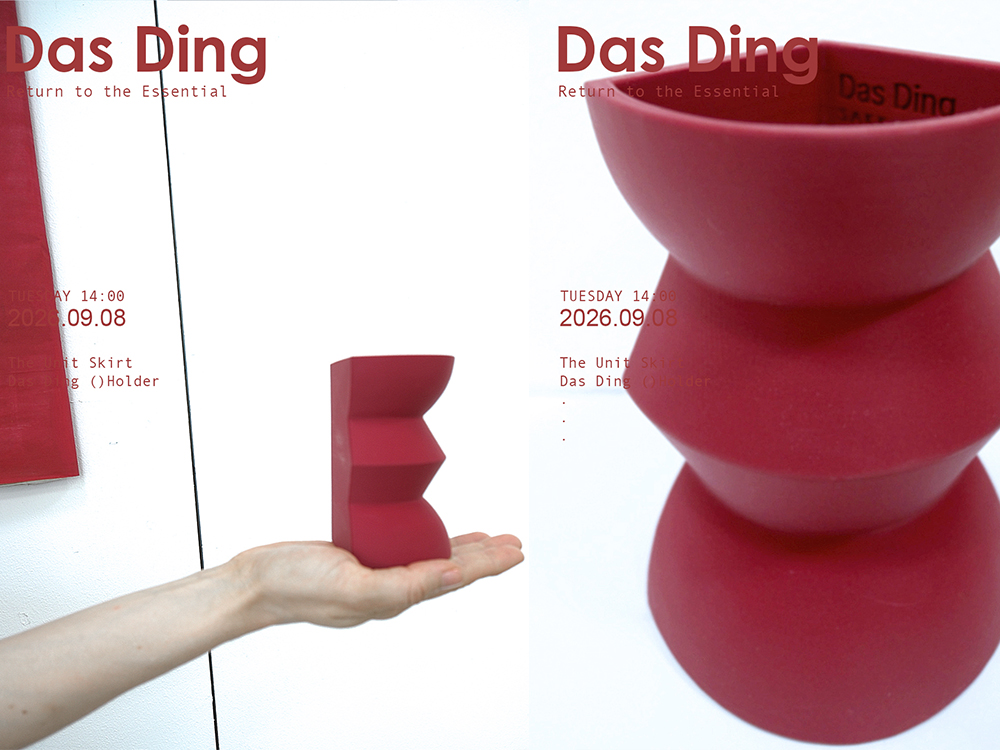
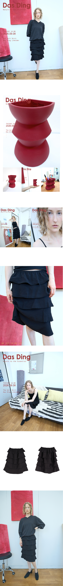

Das Ding · SAKK, 2026
Starting point
‘Basic’을 단순함이나 미니멀리즘으로 반복하고 싶지 않았다.
형태를 덜어내면서도 물성과 무게가 남는 방식을 찾는 데서 시작했다.
Direction
Das Ding / The Thing
대상을 다른 의미로 환원하기보다, 하나의 물체가 그 자체로 존재하는 상태에 집중했다.
응축된 형태, 반복되는 단위, 원단의 무게와 구조를 제품의 언어로 가져왔다.
Execution
- Concept development
- Product design
- Material & silhouette development
- Object development
- Spatial presentation
- Launch direction
Contribution
Creative Direction / Product Development
시즌의 개념부터 제품, 오브제, 공간 연출까지 하나의 시각 언어로 연결했다.

